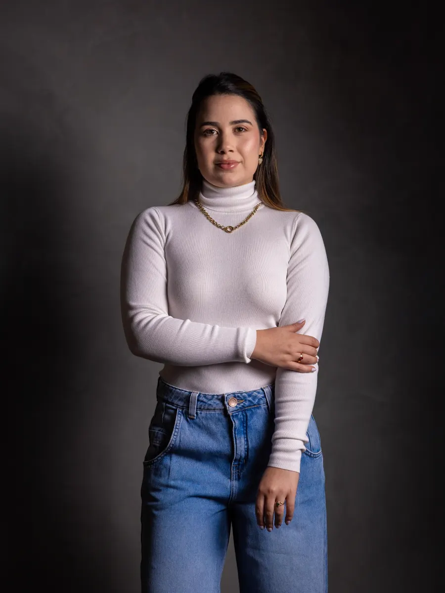
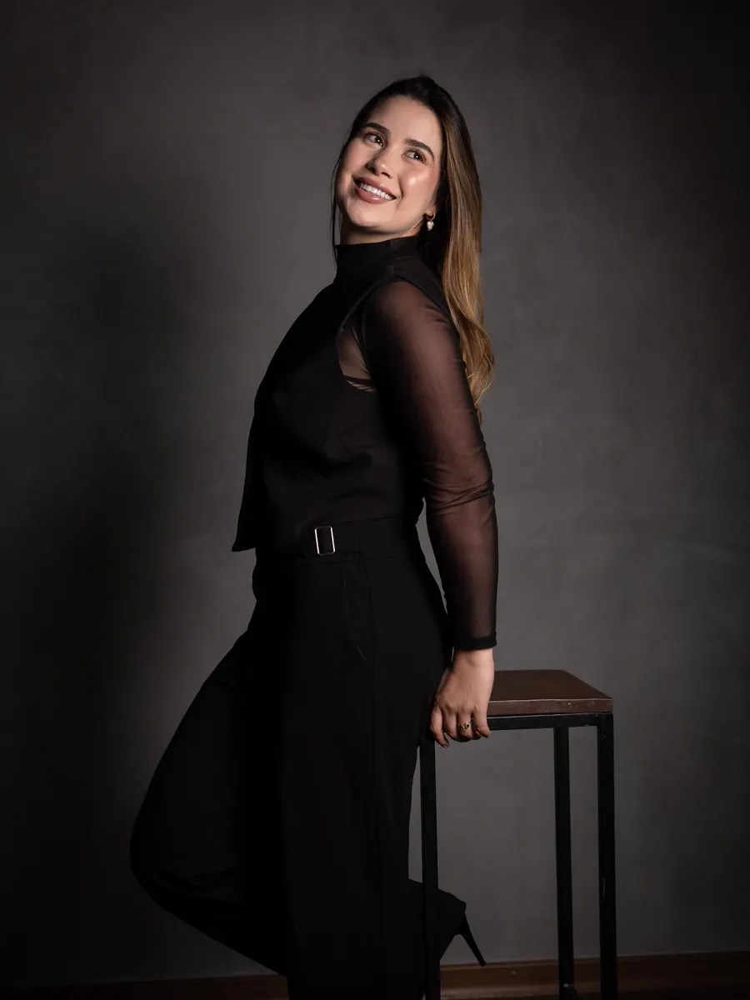
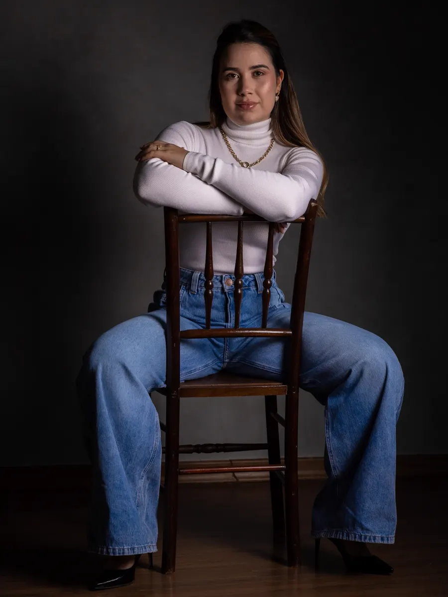

Presencial
Alpinópolis/MG
Consultório próprio, inaugurado em 2025. Um espaço de escuta para entender sua rotina e montar seu plano com calma.
Agendar presencial →Nutricionista em Alpinópolis/MG · Atendimento online
Dieta não é castigo, nem receita pronta. É um plano alimentar pensado para a sua rotina, individual e possível mesmo na correria.

Por que a sua “dieta” não funciona?
Porque você tenta seguir o plano da influencer, e não o que funciona pra você.
Porque você corta demais e depois desconta tudo.
Porque você quer mudar tudo de uma vez, e não muda nada.
Porque você pensa em emagrecer só na segunda e esquece na quarta.
Nutrição eficiente é individual, simples e possível de manter.
Me chama para montar a sua →Abordagem
Ele tem idas e vindas, dias mais fáceis e dias em que parece impossível. E tudo bem: o resultado vem da constância e das pequenas escolhas do dia a dia, não da perfeição.
Seu plano parte da sua rotina, dos seus horários e do que você gosta de comer.
Nada de “aguentar firme por alguns dias”. Estratégias que cabem na correria.
Deslizes fazem parte. O que conta são as pequenas escolhas que se acumulam.
Nenhum alimento sozinho é o vilão — nem o pão francês. Importa como e quando.

Além da balança
Antes de se frustrar, se pergunte: o que mais está mudando, além do peso? Talvez não na balança — mas no espelho, na força e na sua autoestima.
Tá mais forte? Tá evoluindo.
Roupas estão mais soltinhas? Tá funcionando.
A definição corporal aumentou? Continua.
Se olha e sente orgulho? Tá no caminho certo.
Tá se recuperando melhor do treino? Isso é progresso real.
Consultas de nutrição
Eu acolho sua rotina e suas dificuldades, sem julgamentos e com boas estratégias. Juntas, organizamos uma alimentação que caiba na sua vida real.
Online
O mesmo acompanhamento, por videochamada. Ideal para quem tem a agenda apertada — e sente a fome chegar com tudo à noite.

“A nutrição vai muito além de um plano alimentar. É sobre entender a rotina, respeitar o momento e celebrar cada conquista.”
Sou Tainá Miranda, nutricionista em Alpinópolis/MG. Desde que abri meu consultório, foram meses de histórias reais, escuta e transformação — dentro e fora do prato. Meu trabalho é caminhar junto com você rumo a uma relação mais leve com a comida e com o corpo.



No Instagram
Me chama e vamos montar o seu plano alimentar — de forma leve, duradoura e de verdade.
Agendar minha consulta